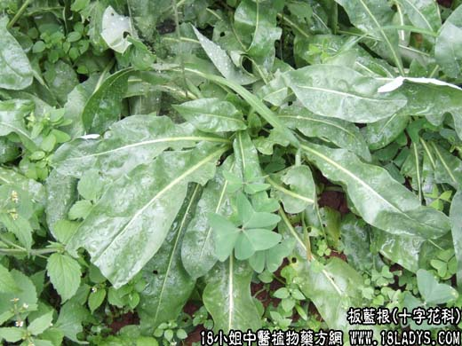

【中药概述】
板蓝根为十字花科草本植物菘蓝的根。苦、寒。归心、胃经。
1．凉血解毒：用于温热病及温疫热盛发斑、痄腮、丹毒及热毒疮痈等证，如（普济消毒饮）去柴胡、升麻。
2．咽喉肿痛：风热毒火上犯咽喉而致头痛、发热、口渴、便秘、单双乳蛾等，常配黄芩，栀子，生地，元参，薄荷，牛蒡子，射干，连翘，银花等。
3．近年用于治疗许多病毒性的热性病亦颇有效。
【药效鉴别】
板蓝根清热凉血解毒，偏于治血分热毒壅滞，咽喉热痛肿烂。
【临证应用】
1.板蓝根90g，水煎服，治流行性腮腺炎；
2.板蓝根，双花，连翘，牛蒡子，桔梗15g，水煎服。治扁桃体炎。
【药理作用】
1.抗菌作用，水浸液对枯草杆菌、金黄色葡萄球菌、八联球菌、大肠杆菌、伤寒、痢疾杆菌、脑膜炎球菌有抑制作用；
2.有抗病毒作用；
3.有抗钩端螺旋体作用。
【化学成分】
含靛甙、靛红、多种氨基酸、糖类、蛋白质、树脂类等。
【用量用法】
本品9——35g，水煎服，或入剂，亦可单用。